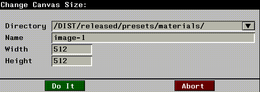
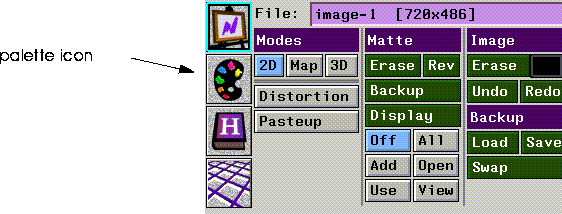
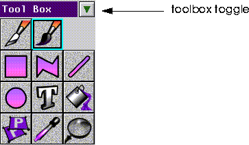
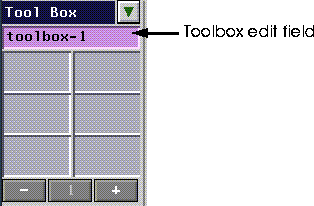
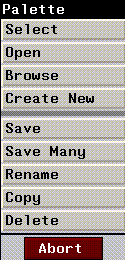
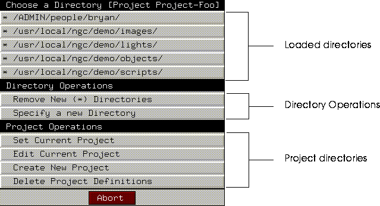
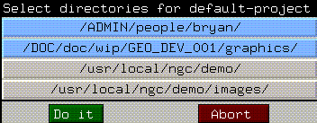
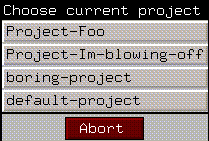
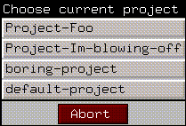

Of course you can create and save images in N-Paint. But you can also create, modify, and manipulate other N-Paint elements, including custom tools and toolboxes, colors, and color palettes.
In this chapter we'll learn how to manage the basic elements of N-Paint; images, tools, and palettes. We'll learn how to:
In This Chapter
Working with N-Paint Elements Image File Operations
Images can be stored in memory or on disk. To work with an image, you have to load it into memory, then select it for display on the canvas.
1. (CLICK-L) on the Canvas Modes icon.
2. (CLICK-L) on the File: field.
4. In the Name field, type the filename of the image you want to open.
Select
(CLICK-L) on Select to choose an image for display on the canvas from among those loaded into memory.
Browse
You can use Browse to interactively examine images in a directory before you load them. See "File Browsers," on page 1-5 to learn how to use the N-Paint browser.
Create New
Allows you to create a new, blank image. When you (CLICK-L) on Create New, the Change Canvas Size dialog appears:

Revert
Revert reloads the current image from disk. This has the effect of undoing any changes you've made to the image since the last time you saved it.
Save
Save saves the current image to disk.
Save Many
Save Many is designed to allow you to save some or all of the files currently loaded into memory at one time. To save multiple images:
2. If necessary, edit the Name and Directory for each file.
4. (CLICK-L) on Save to save the images.
Rename
(CLICK-L) on Rename to rename the current image. Type a new directory and file name in the dialog box.
Copy
Allows you to create a copy of the current image in memory. Type in a directory and filename for the new image in the dialog box. Remember you must select and then save the image to the filesystem if you wish to use it again.
Delete
(CLICK-L) on Delete to delete the current image from memory. You'll need to use the Browse option to delete a file from disk.
2. Find the image file you want to delete, then (CLICK-R) on it.
Load Matte
(CLICK-L) on this option to load a single channel image to use as a matte or alpha-channel component. You can also select an image to load a matte from with a (CLICK-R) on the FIle: field.
Save Matte
This option saves the matte, or alpha-channel component of an image to file.
Image Edit Operations
Once you've loaded or created an image, you can use the Edit operations to change the size of the image.
Scale
Increase or decrease the size of the image. (CLICK-L) on Scale, then enter new values for the image width and height (in pixels). Then (CLICK-L) on Do It.
Crop
Cropping means essentially cutting off portions of the image. (CLICK-L) on Crop, then enter new values for image size in the dialog which appears.
Crop Graphically
This option allows you to choose which portion of the image to crop interactively with a rectangle shape. Portions of the image outside of the rectangle you define are deleted.
1. (CLICK-L) on Crop Graphically.
2. (CLICK-L) on the lower left corner of the area you want to preserve.
3. (CLICK-L) on the upper right hand corner of the area you want to preserve.
To perform file operations on a palette:
1. (CLICK-L) on the palette icon in the commands section of the paint menu.

2. (CLICK-L) on the magenta edit field. The Palette operations menu appears.
To perform file operations on a custom toolbox:
1. (CLICK-L) on the Toobox toggle in the upper right corner of the toolbox.

2. (CLICK-L) on the magenta edit field which appears just above the top row of the toolbox.


Select
Select allows you to select from among those elements loaded into memory via a pop-up menu.
Open
(CLICK-L) on Open to load an element from a disk file. Use the Choose Directory dialog which appears to specify a filename and directory for the element you wish to load.
Browse
Use a file browser to browse elements on disk. You can perform numerous operations, including deletion of element files, using a browser. Browsers are described in more detail in the section "File Browsers," on page 1-5.
Create New
(CLICK-L) on Create New to create and load a new, default palette. For toolboxes, create new generates a new, empty toolbox.
Save
Allows you to save an element to a file on disk. Save works exactly the same way as it does for images (see "Save," on page 4-5).
Save Many
Allows you to save some or all of the elements currently loaded into memory. Save All works in exactly the same way as it does for images (see "Save Many," on page 4-5).
Rename
Allows you to rename the current element (see "Rename," on page 4-5).
Copy
Allows you to copy the current element to a new element (see "Rename," on page 4-5).
Delete
Allows you to delete an element from memory. You must use the browse option to delete an element from the disk.
When you (Click-L) on a Directory field in N-Paint dialogs the Directory Operations menu is displayed.
Directory Operations

Choosing a Directory
At the top of this menu are a list of active directories. These directories include:
Project Operations
If you're going to be working with a large number of images, specialized brushes, paint scripts, and so forth, it's a good idea to create a new project for the job. A project is nothing more than a named set of directories.
Create New Project
To create a new project:
1. (CLICK-L) on Create new project.
1. (CLICK-L) on Delete project definitions.
2. (CLICK-L) on each project you want to delete.
Reload Project Definitions File
The project definitions file includes a user's list of projects (and their associated directories, scripts, and objects). It is kept in a user's home directory, in the file /.ngc/.ngc-projects.
Respecify Directories for a Project
To select the directories you want to add to the current project:
1. (CLICK-L) on Edit Current Project.

2. (CLICK-L) on each directory you want to load.
Set Current Project
Selecting the project you want to work with makes all the directories associated with that project available in N-Paint.
To select the project you want to work with:
1. (CLICK-L) on Set current project.

2. (CLICK-L) on the project you want to make the current project.
Set Current Project
Selecting the project you want to work with makes all the directories associated with that project available in N-Paint.
To select the project you want to work with:
1. (CLICK-L) on Set current project. The Choose current project pop-up menu appears.

2. (CLICK-L) on the project you want to make the current project.
Specify a New Directory
To add a directory to the Directory Operations menu:
1. (CLICK-L) on Specify a New Directory.
You can (TAB) to complete a directory or filename.
Copyright © 1996, Nichimen Graphics Corporation. All rights reserved.